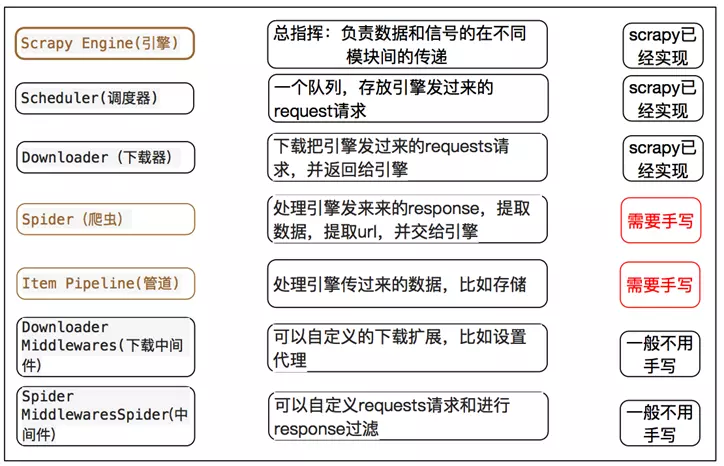

1. Scrapy(1)-模块介绍
之前一直使用 requests + re 的方式做爬虫……所有的步骤：访问、分析结果、存储结果、多进程、异步等等，都是自己实现的……最大的坑莫过于 正则匹配，虽说 正则 很强大，但是经常会出现一些异常的数据。另外，爬取不同的网站，又得重新来一套！！
1.1. Scrapy介绍
Scrapy 是一个为了爬取网站数据，提取结构性数据而编写的应用框架。 可以应用在包括数据挖掘，信息处理或存储历史数据等一系列的程序中。

上图为 Scrapy 的整体架构图，各部分组件的主要功能如下：
- Scrapy Engine(引擎) - 引擎负责 控制数据流在系统中所有组件中的流动，并在相应动作发生发生时触发事件。数据流详细的处理流程见下面的 数据流 部分。
- Scheduler(调度器) - 调度器从引擎接受 request 并将他们入队，以便之后引擎请求它们时提供给引擎。
- Downloader(下载器) - 下载器负责获取页面的数据并提供给引擎，然后返回 response 经过引擎传递给 spiders 处理分析。
- Spiders(结果分析) - Spiders 由 用户编写，分析 下载器 返回的 response，从中提取 item 交由 Item Pipeline 处理，或者继续跟进 url，返回 request 给 Scheduler。
- Item Pipeline(管道) - 负责处理 Spiders 分析后返回的 Item。典型的处理有清理、验证及持久化(存取到数据库中)。
- Downloader middlewares(下载中间件) - 位于 引擎 和 下载器 之间，用于处理 引擎发送给下载器的request 和 下载器返回的response。
- Spider middlewares(爬虫中间件) - 位于 引擎 和 Spiders 之间，用于处理 Spiders的输入(response)和输出(items或request)。
数据流解析：
- 1、引擎打开一个网站，找到处理该网站的 Spider，并向该 spider 请求第一个要爬取的 URL(s)(start_urls参数指定)。之后引擎从 Spider 中获取到第一个要爬取的URL，并在 调度器(Scheduler) 以 request调度。
- 2、引擎向调度器请求下一个要爬取的URL。
- 3、调度器返回下一个要爬取的URL给引擎。
- 4、引擎将URL通过 下载中间件(response) 转发给 下载器(Downloader)。
- 5、一旦页面下载完毕，下载器生成一个页面的 response，并将其通过 下载中间件(response) 发送给引擎。
- 6、引擎将返回的 response 通过 Spider中间件 传递给 Spider 处理分析。
- 7、Spider 处理完后通过 Spider中间件 返回爬取到的 Item 及跟进的新的 request 给引擎。
- 8、引擎将返回的 Item 交由 Item Pipeline 处理，返回的 request 交给调度器存储。
- 9、从第二步开始，重复该过程，知道调度器没有更多的 request，引擎关闭该网站。
整个 Scrapy 由非阻塞的方式实现，基于事件驱动网络框架 Twisted编写。
对于简单的应用来说，用户需要只需要在 spider 中完成处理引擎发来的 response 的功能，以及 Item Pipeline 中处理引擎传来的数据即可。

1.2. 组件
Scrapy 的主要组件都在上面的图中了。下面主要结合爬取 起点中文网 介绍可能需要用户实现的部分组件。
1.2.1. Spider
Spider类 定义了如何爬取网站。包括爬取的动作(是否跟进爬取网站中的链接)，以及如何从网页中提取结构化的数据(item)。Spider 就是 定义爬取的动作及分析网页的地方。
整个 Scrapy 框架的起点是 start_requests函数，它的作用是处理 start_urls 中定义的起始url，返回 request 给引擎。当然，也可以 重写start_requests函数，自己处理。
start_requests函数 的代码如下，首先判断是否重写了 make_requests_from_url函数，重写了就用它处理 start_urls列表 中的url。否则，返回 Request 对象给引擎。
def start_requests(self):
cls = self.__class__
if method_is_overridden(cls, Spider, 'make_requests_from_url'):
warnings.warn(
"Spider.make_requests_from_url method is deprecated; it "
"won't be called in future Scrapy releases. Please "
"override Spider.start_requests method instead (see %s.%s)." % (
cls.__module__, cls.__name__
),
)
for url in self.start_urls:
yield self.make_requests_from_url(url)
else:
for url in self.start_urls:
yield Request(url, dont_filter=True)
parse函数 是用来处理 下载器 下载完网页内容后返回的 response。它可以继续爬取 response 中的 嵌套url链接，此时给引擎返回 resquest。也可以返回 item 给引擎，进入数据本地化存储流程。
parse函数 必须由子类实现！
# Spider基类中的parse函数
def parse(self, response):
raise NotImplementedError('{}.parse callback is not defined'.format(self.__class__.__name__))
所以呢，最开始部分可以有两种实现：
# 1、不重写start_requests方式
class QidianSpider(scrapy.Spider):
name = "qidian"
start_urls = [
"https://www.qidian.com/all?orderId=&page=1&style=2&pageSize=20&siteid=1&pubflag=0&hiddenField=0"
]
def parse(self, response):
max_page = response.css(".lbf-pagination-item").xpath("./a/text()")[-2].extract()
for page in range(1, int(max_page) + 1):
page_url = "https://www.qidian.com/all?orderId=&style=2&pageSize=50&siteid=1&pubflag=0&hiddenField=0&page={page}".format(page = page)
yield scrapy.Request(url = page_url, callback = self.parse_page)
def parse_page(self, response):
pass
# 2、重写start_requests方式
class QidianSpider(scrapy.Spider):
name = "qidian"
def start_requests(self):
begin_url = "https://www.qidian.com/all?orderId=&page=1&style=2&pageSize=20&siteid=1&pubflag=0&hiddenField=0"
yield scrapy.Request(url = begin_url, callback = self.parse)
def parse(self, response):
max_page = response.css(".lbf-pagination-item").xpath("./a/text()")[-2].extract()
for page in range(1, int(max_page) + 1):
page_url = "https://www.qidian.com/all?orderId=&style=2&pageSize=50&siteid=1&pubflag=0&hiddenField=0&page={page}".format(page = page)
yield scrapy.Request(url = page_url, callback = self.parse_page)
def parse_page(self, response):
pass
在处理嵌套中的链接时，当下载器返回 对应链接的response 时，会调用 对应链接的回调函数 进行处理。回调函数的功能和 parse函数 的功能类似，只不过 parse函数 是此类调用的总入口。
1.2.2. Item Pipelines
这里其实是分为两部分： Item 和 Pipelines。
Item
爬虫的主要目的就是 从非结构化的数据源中提取结构性的数据。虽然也可以使用 dict 来返回提取的数据，但其缺少结构性，容易出错。
Item 对象是种简单的容器，保存了爬取得到的数据，提供了 类似于字典 的API以及用来声明可用字段的简单语法。
import scrapy
class ScrapyframetestItem(scrapy.Item):
# define the fields for your item here like:
man_type = scrapy.Field() # 主类型
sub_type = scrapy.Field() # 副类型
novel_name = scrapy.Field() # 小说名称
novel_link = scrapy.Field() # 小说链接
novel_id = scrapy.Field() # 小说ID标识
author_name = scrapy.Field() # 作者名称
author_link = scrapy.Field() # 作者链接
author_id = scrapy.Field() # 作者ID标识
Item 有点儿类似于 Django中的Model，不过没有那么多不同的字段类型(Field type)，更为简单。
它的存取和字典是一样的。
item = ScrapyframetestItem(man_type = "科幻", sub_type = "机甲", novel_name = "One pis", novel_link = "http://1234.com",
novel_id = "123", author_name = "lufei", author_link = "http://232455.com", author_id = "321")
print("item:\n", item)
print("\nOld name:\n", item["novel_name"])
item["novel_name"] = "Dragon Ball"
print("\nNew name:\n", item.get("novel_name", "attr not exist!"))
print("\nNew name:\n", item.get("novel", "attr not exist!"))
# output:
# item:
# {'author_id': '321',
# 'author_link': 'http://232455.com',
# 'author_name': 'lufei',
# 'man_type': '科幻',
# 'novel_id': '123',
# 'novel_link': 'http://1234.com',
# 'novel_name': 'One pis',
# 'sub_type': '机甲'}
#
# Old name:
# One pis
#
# New name:
# Dragon Ball
#
# New name:
# attr not exist!
Pipeline
Pipeline 模块用来处理在 Spider 中收集的 Item 对象。
用户可以在 Pipeline 中
- 清理HTML数据
- 验证爬取的数据
- 查重并丢弃
- 将爬取的结果存储到数据库中
每个 Pipeline 都是一个单独的类，它不继承任何其他的基类。在使用时，需要先激活，在 setting.py 配置文件中指定 ITEM_PIPELINES 参数。后面的数字表示的是运行的优先级，数字越小优先级越高，范围为 0-1000。
ITEM_PIPELINES = {
'ScrapyFrameTest.QidianPipelines.pipelines.ScrapyframetestPipeline': 1,
# 'ScrapyFrameTest.pipelines.ScrapyframetestPipeline': 300,
}
在用户编写的 Pipeline 类中必须实现 process_item(self, item, spider) 函数。该函数在处理时，要么返回 item对象，要么抛出 DropItem 异常。被丢弃的 item 将不会被之后的pipeline组件处理。
如下，实现的是 pipeline 处理 item，首先判断传入的item是否是指定的类型，如果不是则抛出 DropItem 异常。如果是指定类型，则将每部小说的信息从item中取出存入mysql中。
def process_item(self, item, spider):
if isinstance(item, ScrapyframetestItem):
novel_id = item["novel_id"]
novel_name = item["novel_name"]
novel_link = item["novel_link"]
man_type = item["man_type"]
sub_type = item["sub_type"]
author_id = item["author_id"]
author_name = item["author_name"]
author_link = item["author_link"]
QidianDb.insert_table(novel_id = novel_id,
novel_name = novel_name,
novel_link = novel_link,
man_type = man_type,
sub_type = sub_type,
author_id = author_id,
author_name = author_name,
author_link = author_link)
return item
else:
raise DropItem("Item type not allow!")
Pipeline组件 还有其他的几个函数可以实现：
- open_spider(self, spider) - 在 Spider开启时 被自动调用，用户可以在这里进行一些诸如开启数据库的操作。
- close_spider(self, spider) - 在 Spider关闭时 被自动调用，用户可以在这里做一些收尾工作，如关闭数据库操作。
- from_crawler(cls, crawler) - 这是一个类方法，需使用 @classmethod 装饰。它的传入参数 crawler 包含了scrapy的所有核心组件信息。最后需要返回一个 pipeline 实例。
def open_spider(self, spider):
print("Begin Spider!")
QidianDb.OpenDB()
def close_spider(self, spider):
print("End Spider!")
QidianDb.CloseDB()
1.2.3. Downloader Middleware
下载中间件 位于上图中的 engine 和 downloader 之间，主要是处理从 engine 向 downloader 发出的 request 请求以及从 downloader 返回给 engine 的 response。
在使用 下载中间件 前，需要在 settings.py 中配置对应的下载器中间件。
# settings.py
DOWNLOADER_MIDDLEWARES = {
'DoubanMovieSpider.DoubanMiddlewares.DoubanMovieInfoDownloadMiddleware.UserAgentMiddleware': 901,
'DoubanMovieSpider.DoubanMiddlewares.DoubanMovieInfoDownloadMiddleware.CookieMiddleware': 902,
'DoubanMovieSpider.DoubanMiddlewares.DoubanMovieInfoDownloadMiddleware.ProxyMiddleware': 903,
'DoubanMovieSpider.DoubanMiddlewares.DoubanMovieInfoDownloadMiddleware.ConnectionMiddleware': 904,
}
下载器中间件由 DOWNLOADER_MIDDLEWARES 字典配置，key为对应下载器中间件的类所在的路径，value为中间件的优先级。由于在 default_settings.py 中已经存在了默认的下载器中间件，所以最好自己按要求配置优先级。数字越小优先级越高。
# default_settings.py
DOWNLOADER_MIDDLEWARES = {}
DOWNLOADER_MIDDLEWARES_BASE = {
# Engine side
'scrapy.downloadermiddlewares.robotstxt.RobotsTxtMiddleware': 100,
'scrapy.downloadermiddlewares.httpauth.HttpAuthMiddleware': 300,
'scrapy.downloadermiddlewares.downloadtimeout.DownloadTimeoutMiddleware': 350,
'scrapy.downloadermiddlewares.defaultheaders.DefaultHeadersMiddleware': 400,
'scrapy.downloadermiddlewares.useragent.UserAgentMiddleware': 500,
'scrapy.downloadermiddlewares.retry.RetryMiddleware': 550,
'scrapy.downloadermiddlewares.ajaxcrawl.AjaxCrawlMiddleware': 560,
'scrapy.downloadermiddlewares.redirect.MetaRefreshMiddleware': 580,
'scrapy.downloadermiddlewares.httpcompression.HttpCompressionMiddleware': 590,
'scrapy.downloadermiddlewares.redirect.RedirectMiddleware': 600,
'scrapy.downloadermiddlewares.cookies.CookiesMiddleware': 700,
'scrapy.downloadermiddlewares.httpproxy.HttpProxyMiddleware': 750,
'scrapy.downloadermiddlewares.stats.DownloaderStats': 850,
'scrapy.downloadermiddlewares.httpcache.HttpCacheMiddleware': 900,
# Downloader side
}
指定完要使用的中间件后，进入编写中间件的步骤。按需求实现下面的一些函数。
class DoubanmoviespiderDownloaderMiddleware(object):
# Not all methods need to be defined. If a method is not defined,
# scrapy acts as if the downloader middleware does not modify the
# passed objects.
@classmethod
def from_crawler(cls, crawler):
# This method is used by Scrapy to create your spiders.
s = cls()
crawler.signals.connect(s.spider_opened, signal=signals.spider_opened)
return s
def process_request(self, request, spider):
# Called for each request that goes through the downloader
# middleware.
# Must either:
# - return None: continue processing this request
# - or return a Response object
# - or return a Request object
# - or raise IgnoreRequest: process_exception() methods of
# installed downloader middleware will be called
return None
def process_response(self, request, response, spider):
# Called with the response returned from the downloader.
# Must either;
# - return a Response object
# - return a Request object
# - or raise IgnoreRequest
return response
def process_exception(self, request, exception, spider):
# Called when a download handler or a process_request()
# (from other downloader middleware) raises an exception.
# Must either:
# - return None: continue processing this exception
# - return a Response object: stops process_exception() chain
# - return a Request object: stops process_exception() chain
pass
def spider_opened(self, spider):
spider.logger.info('Spider opened: %s' % spider.name)
对于下载器中间件而言，主要的两个函数为 process_request()、process_response()。
process_request()
process_request() 用于处理发给 downloader 的 request 请求，可以在这个函数中对 request 请求进行修改，例如添加header、添加cookies、修改代理等。
process_request() 有四种返回值:
- 如果返回 None，则 scrapy 将继续调用其他下载器中间件的 process_request()方法。
- 如果返回 Request对象，scrapy 会停止调度 接下来的其他中间件的process_request()方法，scrapy 会将返回的 Request对象 重新加入调度任务中，重新开始 request 请求。
- 如果返回 Response对象，scrapy 会停止调度 process_request()和process_exception()方法，并且不將请求放送至下载器，而是作为下载器返回的 Response对象 处理。
- 如果产生 IgnoreRequest异常，则对应的所有的下载器中间件中的 process_exception() 函数将会被调用。如果没有任何下载器中间件来处理这种异常，则会调用 errback function。
process_response()
process_response() 用于处理下载器返回的 response，可以在这里对一些异常进行处理、在返回的 Response对象 中添加自定义的一些内容。
process_response() 返回值有三种:
- 如果返回 Request对象，则退出之后的下载器中间件的 process_response() 调度，将目标重新加入请求队列，与 process_request() 处理方式一样。
- 如果返回 Response对象，则继续进行剩下的下载器中间件中的 process_response() 方法。
- 如果产生 IgnoreRequest异常，处理方式与 process_request() 一样。
注意: process_request()处理是按照优先级顺序进行，而process_response() 和 process_exception() 是按照逆序进行的。这点可以在源码总，添加下载器中间件时看出。
class DownloaderMiddlewareManager(MiddlewareManager):
component_name = 'downloader middleware'
@classmethod
def _get_mwlist_from_settings(cls, settings):
return build_component_list(
settings.getwithbase('DOWNLOADER_MIDDLEWARES'))
def _add_middleware(self, mw):
# 添加process_request方法，使用的是append
if hasattr(mw, 'process_request'):
self.methods['process_request'].append(mw.process_request)
# 添加process_response和process_exception方法，使用的是insert
if hasattr(mw, 'process_response'):
self.methods['process_response'].insert(0, mw.process_response)
if hasattr(mw, 'process_exception'):
self.methods['process_exception'].insert(0, mw.process_exception)
def download(self, download_func, request, spider):
@defer.inlineCallbacks
def process_request(request):
# 使用时的方式是一样的，便利列表，从头开始
for method in self.methods['process_request']:
response = yield method(request=request, spider=spider)
assert response is None or isinstance(response, (Response, Request)), \
'Middleware %s.process_request must return None, Response or Request, got %s' % \
(six.get_method_self(method).__class__.__name__, response.__class__.__name__)
if response:
defer.returnValue(response)
defer.returnValue((yield download_func(request=request,spider=spider)))
@defer.inlineCallbacks
def process_response(response):
assert response is not None, 'Received None in process_response'
if isinstance(response, Request):
defer.returnValue(response)
for method in self.methods['process_response']:
response = yield method(request=request, response=response,
spider=spider)
assert isinstance(response, (Response, Request)), \
'Middleware %s.process_response must return Response or Request, got %s' % \
(six.get_method_self(method).__class__.__name__, type(response))
if isinstance(response, Request):
defer.returnValue(response)
defer.returnValue(response)
@defer.inlineCallbacks
def process_exception(_failure):
exception = _failure.value
for method in self.methods['process_exception']:
response = yield method(request=request, exception=exception,
spider=spider)
assert response is None or isinstance(response, (Response, Request)), \
'Middleware %s.process_exception must return None, Response or Request, got %s' % \
(six.get_method_self(method).__class__.__name__, type(response))
if response:
defer.returnValue(response)
defer.returnValue(_failure)
deferred = mustbe_deferred(process_request, request)
deferred.addErrback(process_exception)
deferred.addCallback(process_response)
return deferred
1.2.4. Spider Middleware
// todo